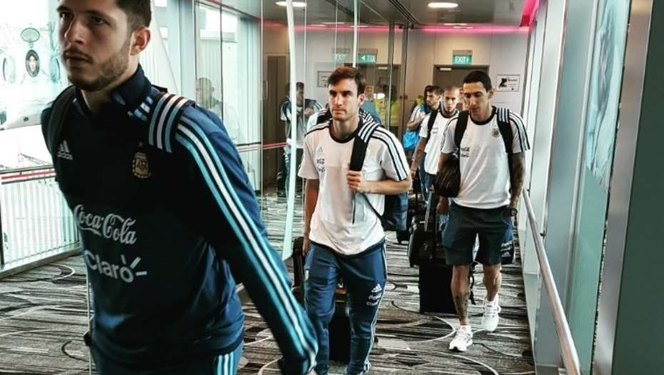

Los tres futbolistas no jugarán el amistoso del martes ante el seleccionado local. Debido a la exigencia en sus clubes el mister decidio otorgarles algo de descanso.
Por otra parte el resto del plantel sigue enfocado en el amistoso de la proxima semana.

A menos de 24 horas de la victoria 1 a 0 frente a Brasil en Melbourne, que marcó el punto de partida del ciclo de Jorge Sampaoli como entrenador, el seleccionado argentino ya se instaló en Singapur para la segunda y última estación en esta gira: el duelo que el martes disputará ante el combinado local.
El plantel argentino arribó a Singapur en un vuelo chárter que lo trasladó desde Melbourne. A ese avión no se subieron:
Estos jugadores fueron desafectados y no participarán del duelo del martes (a las 9, hora argentina) en el estadio Nacional de Singapur.
Por su parte, Lionel Messi viajó junto a sus compañeros, pero al llegar al Aeropuerto Internacional Changi los caminos se separaron, ya que el rosarino, quien tampoco disputará el segundo amistoso de la gira, regresará a Barcelona para ultimar los detalles y firmar un nuevo contrato con el club catalán (sería hasta el 2022 y con una cláusula de rescisión de 400 millones de euros) y luego se trasladará a Rosario para casarse el 30 de junio con Antonella Roccuzzo.
Según el diario español Sport y Mundo Deportivo de España, la Pulga tiene previsto invitar a prácticamente todos los hombres del elenco catalán y ya habría expresado en su círculo íntimo lo que desea como regalo de bodas.